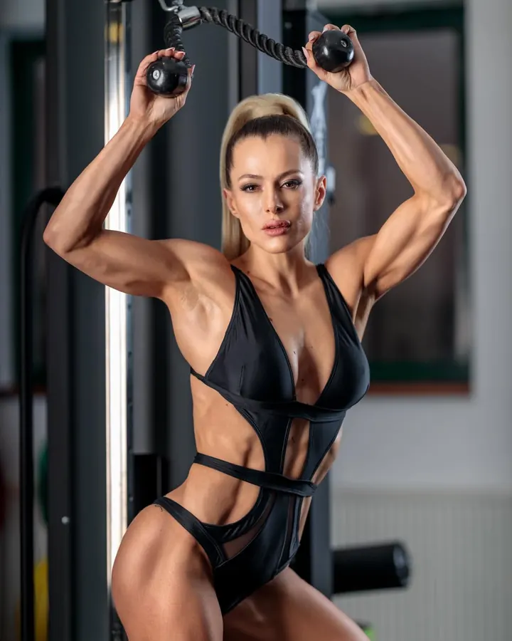
01Capitolul 2
„Mănânc sănătos și tot nu slăbesc.”
Vezi răspunsulCapitolul 2
Și alimentele sănătoase au calorii. Îți arăt unde se ascunde surplusul: gustările și băuturile dintre mese.
Slăbire nu înseamnă remodelare. Învață să slăbești păstrând mușchiul, ca să-ți schimbi forma, nu doar cifra de pe cântar.
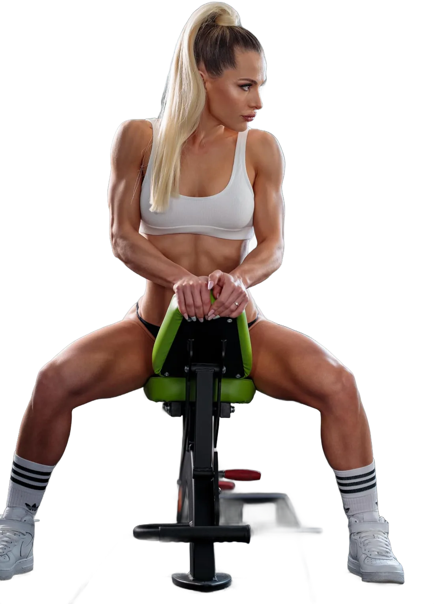

Poți pierde kilograme și totuși să nu-ți placă ce vezi în oglindă. Ghidul ăsta îți arată cum slăbești păstrând mușchiul, ca să-ți schimbi forma, nu doar cifra de pe cântar.
Oana Purcaru · IFBB Pro Wellness, antrenor personal și asistent medical

Și alimentele sănătoase au calorii. Îți arăt unde se ascunde surplusul: gustările și băuturile dintre mese.
Slăbirea și remodelarea sunt lucruri diferite. Contează ce pierzi: grăsime sau mușchi.

Forța modelează corpul. Cardio arde calorii pe moment, dar nu construiește forma.

Dietele prea restrictive topesc mușchiul și aduc efectul yo-yo. Consecvența bate perfecțiunea.

Slăbirea și remodelarea corporală sunt două lucruri diferite. Nu contează doar câte kilograme pierzi, ci mai ales ce pierzi.
Reții: Kilogramele nu spun tot: contează ce pierzi, grăsime sau mușchi.
„Mănânc sănătos și tot nu slăbesc.” Este una dintre cele mai frecvente situații pe care le întâlnesc.
Reții: Slăbești doar în deficit caloric, chiar dacă mănânci sănătos.

În sală modelăm ceea ce se află sub țesutul adipos. De aceea forța contează mai mult decât transpirația.
Reții: Forța modelează corpul; cardio doar arde calorii pe moment.
Nu ai nevoie de o dietă-minune. Ai nevoie de câteva reguli simple, pe care le poți respecta zilnic.
Reții: O sursă de proteină la fiecare masă.
Două exemple de zi, una pentru femei și una pentru bărbați, construite pe regulile din capitolul anterior.
Reții: Meniurile sunt exemple: cantitățile se adaptează fiecăruia.
Antrenamentul este o știință. În spatele unui program eficient trebuie să existe o structură, o logică și o selecție corectă a exercițiilor.
Reții: Progresezi treptat: ajungi la 15 repetări, apoi crești greutatea.
Cardio nu trebuie privit doar ca un instrument pentru slăbit. Îl folosesc ca ajutor, nu ca bază.
Reții: Cardio ajută, dar nu înlocuiește antrenamentul de forță.

Patru programe gata de urmat: femei și bărbați, începători și intermediari.
Reții: Alege programul potrivit nivelului tău.
Cele mai mari greșeli nu țin de un exercițiu sau de un aliment. Țin de lipsa strategiei.
Reții: Consecvența contează mai mult decât perfecțiunea.

Principiile sunt aceleași pentru toți. Diferă felul în care le adaptăm.
Reții: După 40 de ani, masa musculară și proteina contează și mai mult.
Transformări reale de la BodyFit Gym și din coachingul online, la finalul ghidului.
Vreau ghidulFemei și bărbați, începători și intermediari. Alege programul și ziua: corpul se scanează, se întoarce pe partea lucrată și mușchii se aprind.
Numele din programe sunt în engleză, așa cum le găsești la aparate și în sală.
Coperta Ediția pentru telefon, gata și de printat în A4.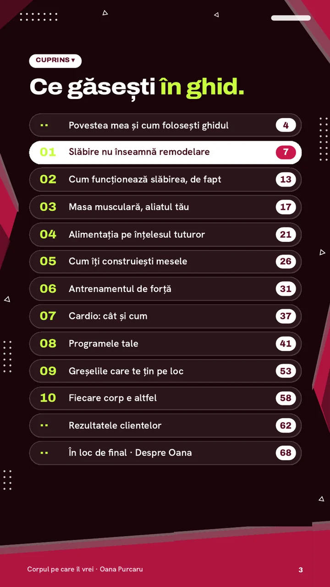
Cuprins 10 capitole, rezultatele clientelor și povestea Oanei.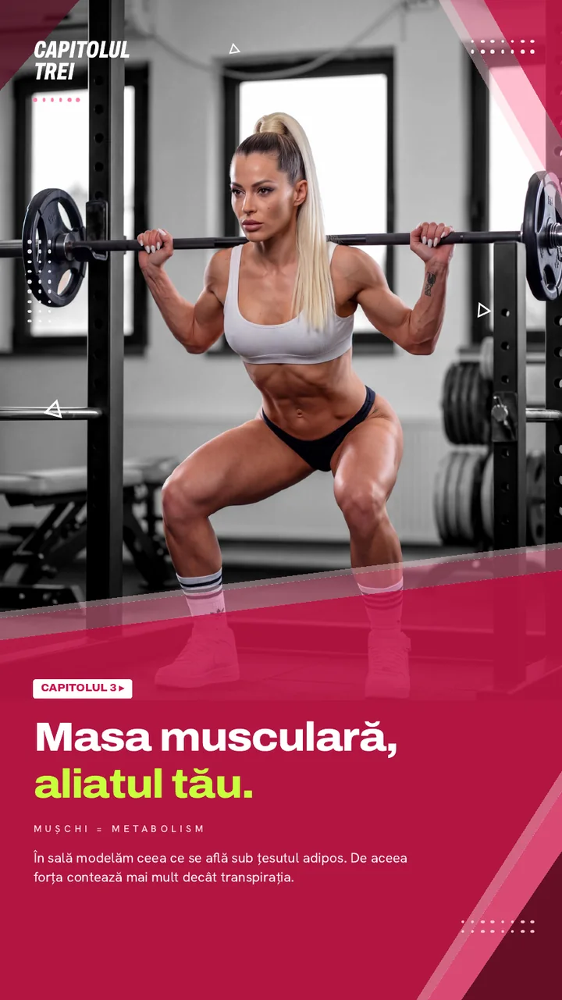
Capitolul 3 Masa musculară, aliatul tău.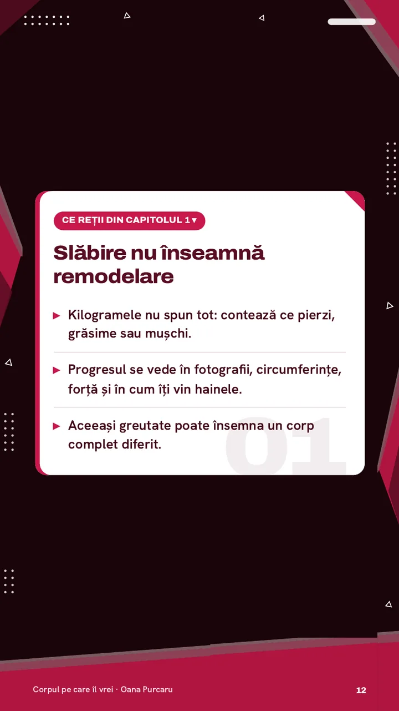
Recapitulare Fiecare capitol se încheie cu ce reții.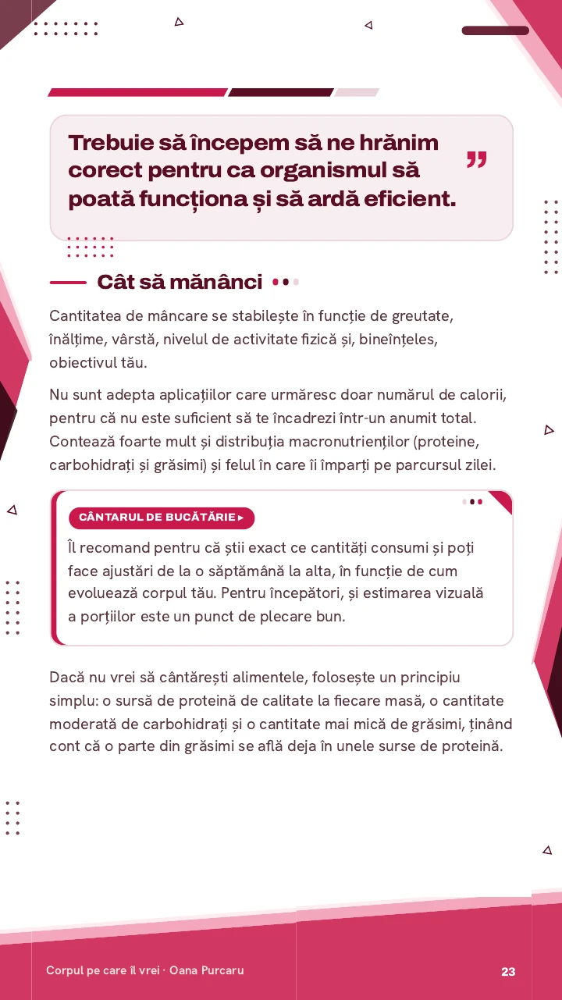
Capitolul 4 Cât să mănânci, pe înțelesul tuturor.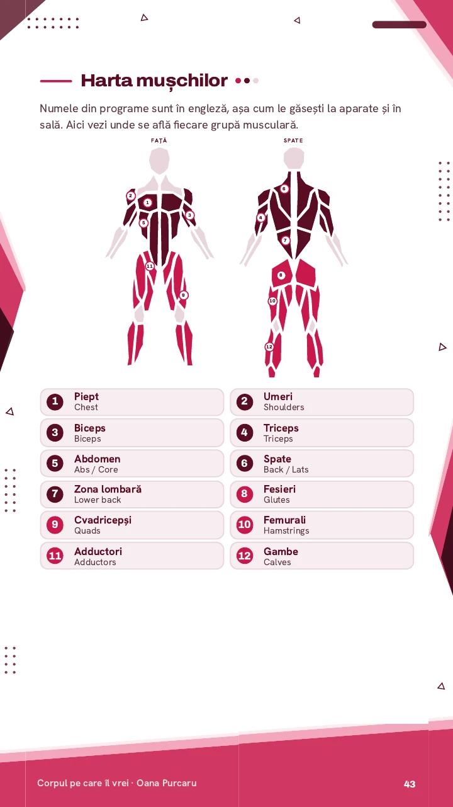
Capitolul 8 Harta mușchilor, față și spate.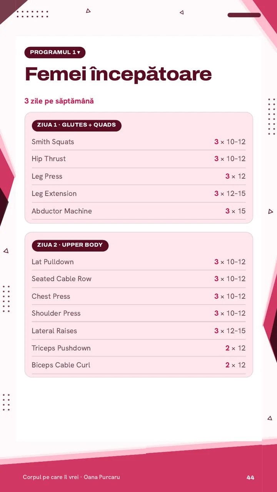
Programul 1 Femei începătoare, 3 zile pe săptămână.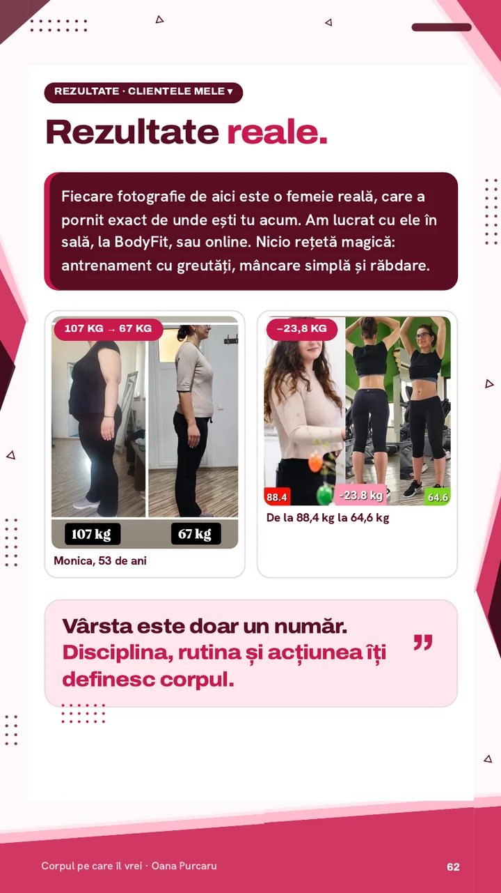
Rezultate Transformările clientelor.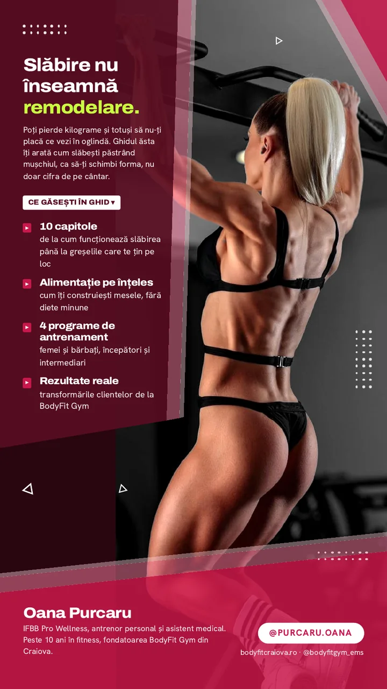
Coperta spate Ce găsești în ghid, pe scurt.Fiecare fotografie de aici este o femeie reală, care a pornit exact de unde ești tu acum. Am lucrat cu ele în sală, la BodyFit, sau online. Nicio rețetă magică: antrenament cu greutăți, mâncare simplă și răbdare.
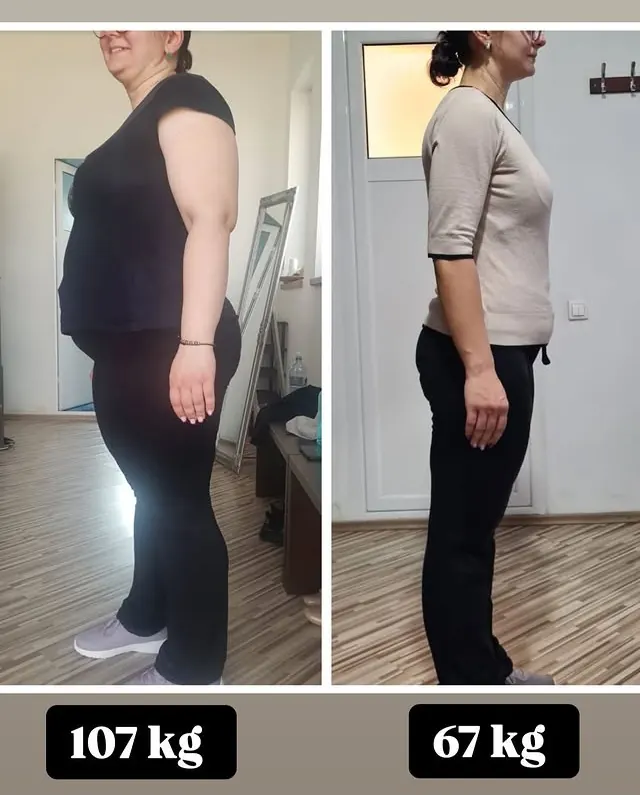
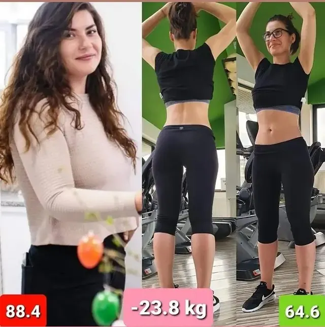
 24 de săptămâni Clientă online
24 de săptămâni Clientă online 2 săptămâni Vio, 47 de ani · primele rezultate
2 săptămâni Vio, 47 de ani · primele rezultate −9 kg în 8 săptămâni
−9 kg în 8 săptămâni 3 săptămâni diferența se vede
3 săptămâni diferența se vede 2–3 antrenamente pe săptămână
2–3 antrenamente pe săptămână După sarcină slăbire sănătoasă
După sarcină slăbire sănătoasăRezultatele diferă de la o persoană la alta și depind de consecvență, alimentație și punctul de plecare.
Completează câteva date și vezi cât să mănânci, câtă proteină îți trebuie, unde ești cu grăsimea corporală și cât durează realist până la obiectiv.
Formula Oanei: greutatea țintă × 11–12 (în livre). Interval: –.
1 g pe kilogram de greutate țintă. Adică – la fiecare din 4 mese.
Metoda US Navy, cu centimetrul. –
Ritm sănătos: 0,5–1% din greutate pe săptămână, ca să păstrezi mușchiul.
Rezultatele sunt estimări orientative, nu sfat medical. Dacă ai o afecțiune, ești însărcinată sau alăptezi, vorbește întâi cu medicul.
Transformarea corporală nu este o întâmplare. Este rezultatul unei strategii, al educației, al consecvenței și al unor obiceiuri construite în timp.
Oana Purcaru
 IFBB Pro · Wellness
IFBB Pro · WellnessA trecut ea însăși prin kilogramele în plus și apoi prin perioada în care era slabă, dar nu se simțea bine în corpul ei. Bodybuildingul a schimbat totul: a ajuns la nivel profesionist și a devenit IFBB Pro Wellness.
Are pregătire medicală (asistent medical, cu lucrarea de licență despre obezitate) și peste 10 ani de lucru cu oameni reali, în sală și online. Astăzi conduce BodyFit Gym din Craiova și pregătește sportive pentru scenă, ca antrenor de posing pentru categoriile wellness și bikini.
Pentru femei și bărbați care vor să slăbească păstrând mușchiul, ca să-și schimbe forma, nu doar cifra de pe cântar. Programele sunt pentru începători și intermediari.
Da, pentru programe. Cele patru programe sunt construite pentru sală, cu aparate, gantere și cabluri. Capitolele despre alimentație și strategie te ajută oriunde te antrenezi.
Da. Programul pentru începători are trei antrenamente pe săptămână, iar harta mușchilor îți arată ce lucrezi la fiecare exercițiu. Tehnica rămâne înaintea greutății.
Ca PDF, în două versiuni: una făcută pentru citit pe telefon și una A4, pentru printat. Le primești pe amândouă.
Primești acces imediat, pe email și în contul tău Whop: deschizi Files, alegi fișierul și apeși Download. Deschide PDF-ul în Chrome, Files sau Google Drive, nu în previzualizarea din Instagram sau WhatsApp.
Principiile sunt aceleași pentru toți; diferă felul în care le adaptezi, iar capitolul 10 explică asta. Dacă ai o afecțiune sau o accidentare, cere întâi sfatul medicului.
Plata este procesată de Whop, prin card sau portofel electronic. Datele cardului tău nu ajung la noi.
Scrie-i Oanei pe Instagram, la @purcaru.oana, sau scrie-ne la studioairwalk@gmail.com.
Nu ți-ai găsit răspunsul? Scrie-i Oanei pe Instagram, la @purcaru.oana.